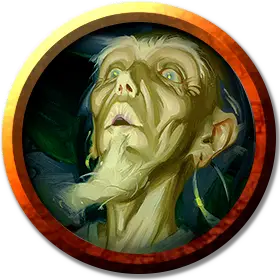

Станимир
Stanimir
Средний Гуманоид (Человек), хаотично-нейтральный, именной НИП

Класс Доспеха 12 (15 с доспехами мага)
Хиты 40 (9к8)
Скорость 30 футов
| мод | спас | ||
|---|---|---|---|
| СИЛ | 9 | −1 | −1 |
| ЛОВ | 14 | +2 | +2 |
| ТЕЛ | 11 | +0 | +0 |
| мод | спас | ||
|---|---|---|---|
| ИНТ | 17 | +3 | +3 |
| МДР | 12 | +1 | +1 |
| ХАР | 11 | +0 | +0 |
Навыки История +6, Магия +6
Чувства пассивное Восприятие 11
Языки Все
Опасность 6 (2300 опыта)
Бонус мастерства +3
Особенности
Языки. . Станимир знает до 4 любых языков.
Использование заклинаний. Станимир является заклинателем 9-го уровня. Его базовой характеристикой является Интеллект (Сл спасброска от заклинания 14, +6 к попаданию атаками заклинаниями). У него подготовлены следующие заклинания волшебника:
• Заговоры (неограниченно): дружба [friends], свет [light], волшебная рука [mage hand], фокусы [prestidigitation]
• 1-й уровень (4 ячейки): очарование личности [charm person], доспехи мага [mage armor], щит [shield], усыпление [sleep]
• 2-й уровень (3 ячейки): туманный шаг [misty step], внушение [suggestion]
• 3-й уровень (3 ячейки): проклятие [bestow curse], призрачный скакун [phantom steed], прикосновение вампира [vampiric touch]
• 4-й уровень (3 ячейки): высшая невидимость [greater invisibility], каменная кожа [stoneskin]
• 5-й уровень (1 ячейка): подчинение личности [dominate person]
Действия
Кинжал. Рукопашная или дальнобойная атака оружием: +5 к попаданию, досягаемость 5 футов или дистанция 20/60 футов, одна цель. Попадание: Колющий урон 4 (1к4 + 2).
Проклятия Вистани (Перезарядка после Продолжительного отдыха). Вистана выбирает видимую цель в 30 футах от себя. Цель должна преуспеть в спасброске Мудрости Сл 11, чтобы избежать проклятия. Проклятие действует, пока не будет снято заклинаниями вроде снятие проклятья [remove curse], высшее восстановление [greater restoration] и другими им подобными. Оно не прекращает действовать, когда цель умирает. Если проклятая цель будет возвращена к жизни, проклятие продолжает действовать.
Когда проклятие разрушается, вистана получает болезненный психический откат. Величина психического урона зависит от тяжести наложенного проклятия.
Вистана выбирает эффект проклятия из приведенных ниже опций; возможны и другие варианты проклятий вистани. Все такие эффекты, по окончании своего действия, наносят урон психической энергией вистани, наложившему его.
• Цель не способна производить некоторые виды действий, включающие тонкие манипуляции, такие как завязывание узлов, игру на инструментах, работу с ниткой и иголкой или накладывание заклинаний с соматическими компонентами. Когда проклятие разрушается, вистана получает 1к6 урона психической энергией.
• Внешний вид цели меняется, становясь более зловещим, но это лишь внешний эффект. Например, проклятие может создать шрам на лице жертвы, превратить зубы цели в желтоватые клыки или сделать дыхание цели зловонным. Когда проклятие разрушается, вистанка получает 1к6 урона психической энергией.
• Немагический предмет (по выбору Мастера), которым владеет цель, пропадает и не может быть найден пока не закончится проклятие. Пропавший предмет не может весить более 1 фунта. Когда проклятие разрушается, вистана получает 1к6 урона психической энергией.
• Цель получает уязвимость к типу урона по выбору вистаны. Когда проклятие разрушается, вистана получает 3к6 урона психической энергией
• Цель совершает с помехой проверки способности и спасброски, связанные с одной характеристикой по выбору вистаны. Когда проклятие разрушается, вистана получает 3к6 урона психической энергией.
• Настройка цели к одному из его магических предметов (по выбору Мастера) пропадает и цель не может более настроиться к этому предмету, пока проклятие не будет разрушено. Когда проклятие разрушается, вистана получает 5к6 урона психической энергией.
• Цель слепнет, глохнет или оба эффекта одновременно. Когда проклятие разрушается, вистана получает 5к6 урона психической энергией.
Сглаз (Перезарядка после Короткого или Продолжительного отдыха). Действием вистана может выбрать целью существо, которое он может видеть, в 10 футах от себя. Эта волшебная способность, которую вистана называют Сглазом, повторяет длительность и эффект заклинаний дружба с животными [animal friendship], очарование личности [charm person], удержание личности [hold person] (по выбору вистаны), но не требует ни соматических, ни материальных компонентов. Сл спасброска 11. Если цель преуспевает в спасброске, вистана слепнет до конца своего следующего хода.
Вистана, использовавшая Сглаз, не может использовать его пока не совершит короткий или продолжительный отдых. Как только цель преуспеет в спасброске против Сглаза вистани, она остаётся иммунной к Сглазу всех вистани на 24 часа.
Описание
Лидер группы Станимир. У Станимира есть дочь, Дамия и сын, Ратка. Девять других вистани слушаются приказов Ратки. Шесть упряжных лошадей используются для того, чтобы тянуть повозки Вистани, в которых располагаются их пожитки, но среди них нет ничего особо ценного.